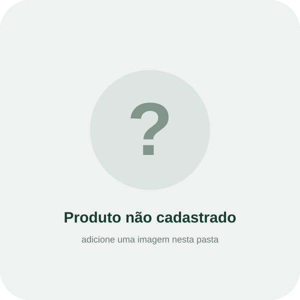

Aguardando produto
Aponte a câmera para uma embalagem
Quando a IA reconhecer uma classe cadastrada, as informações aparecerão aqui.
Glúten—
Lactose—
Calorias—
Açúcares—
Sódio—
Gordura saturada—
⚠️
Atenção / contraindicações do rótuloAguardando reconhecimento.
Alérgenos declarados—
Alternativa cadastrada—
Cadastre uma justificativa objetiva baseada nos rótulos.
Fonte dos dados: Informações do rótulo do produto cadastrado.
Confira sempre a embalagem física. A composição pode ser alterada pelo fabricante.